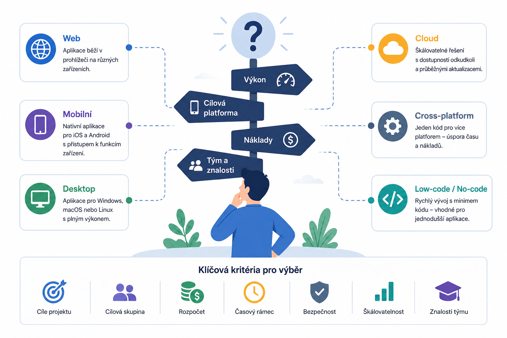

Výběr platformy pro vývoj aplikací
Praktické rady pro výběr správné platformy a frameworku podle typu projektu.

Webové aplikace
Přehled populárních frameworků
| Nástroj/Framework | Platformy | Výhody | Nevýhody |
|---|---|---|---|
| React | Web | ✅ Velká komunita 🔄 Znovupoužitelné komponenty ⚡ Virtuální DOM 🔌 Bohatý ekosystém |
📈 Strmá křivka učení 🔤 JSX syntaxe 🔗 Nutnost dalších knihoven |
| Vue.js | Web | 🧩 Snadné na naučení 🔗 Reaktivní datové vazby 🛠️ Flexibilní 👥 Silná komunita |
📦 Menší ekosystém 📉 Omezená škálovatelnost 🏢 Méně vhodné pro enterprise |
| Angular | Web | 🏗️ Komplexní framework 🔄 Obousměrné datové vazby 🧩 Injekce závislostí 👥 Silná komunita |
📈 Strmá křivka učení 🧱 Složitost ⚡ Výkon u velkých aplikací |
| Svelte | Web | 🚀 Žádný virtuální DOM ⚡ Výkonný 📝 Jednoduchá syntaxe 🔗 Reaktivní model |
👥 Menší komunita 📦 Omezený ekosystém 🧪 Méně vyspělý |
| ASP.NET Core | Web | ⚡ Vysoký výkon 🌍 Cross-platform 🔒 Bezpečnost 🔗 Integrace s .NET |
📈 Strmá křivka učení 🧱 Složitost 🎨 Omezené front-end možnosti |
| Django | Web | 🏗️ Vysoce úrovňový 🛡️ Bezpečnost 🧩 Admin panel 📈 Škálovatelnost |
🧱 Monolitická struktura 📈 Strmá křivka učení 🎨 Omezené front-end možnosti |
| Laravel | Web | ✨ Elegantní syntaxe 🔒 Autentizace 👥 Komunita ⚡ Rychlý vývoj |
⚡ Výkon 🧱 Monolitická struktura 📉 Škálovatelnost |
| Spring Boot | Web | 🏗️ Komplexní 🔒 Bezpečnost 📈 Škálovatelnost 🔗 Integrace s Java |
📈 Strmá křivka učení 🧱 Složitost ⚙️ Konfigurace |
| Express.js | Web | 🧩 Minimalistický ⚡ Výkonný 🛠️ Flexibilní 👥 Komunita |
🔗 Nutnost dalších knihoven 📦 Omezené funkce 🧩 Nekonzistentní kód |
| Ruby on Rails | Web | 📝 Konvence ⚡ Rychlý vývoj 🧪 Testování 👥 Komunita |
⚡ Výkon 🧱 Monolitická struktura 📈 Strmá křivka učení |
Mobilní aplikace
Frameworky pro mobilní vývoj
| Nástroj/Framework | Platformy | Výhody | Nevýhody |
|---|---|---|---|
| React Native | iOS, Android | ⚡ Rychlý vývoj 👥 Komunita 🔄 Znovupoužitelný kód 🔥 Hot-reload |
⚡ Výkon 📦 Velikost aplikace 🔗 Závislost na nativních modulech |
| Flutter | iOS, Android | ⚡ Výkon 🎨 Krásné UI 🔄 Jeden kód 🔥 Hot-reload |
📦 Velikost aplikace 📚 Omezené knihovny 📈 Křivka učení pro Dart |
| Xamarin | iOS, Android | ⚡ Nativní výkon 🔄 Jeden kód 🔗 Microsoft podpora 🛠️ Přístup k API |
📦 Velikost aplikace 🐢 Pomalejší vývoj 🔗 Závislost na Microsoft |
| Swift | iOS | ⚡ Výkon 🎨 Nativní vzhled 🍏 Apple podpora 🛠️ Přístup k funkcím |
🍏 Pouze iOS 📈 Křivka učení 👥 Menší komunita |
| Kotlin Multiplatform | iOS, Android | 🔄 Sdílení kódu 🔗 Kotlin podpora 🛠️ Postupný přechod |
🧪 Vývoj 👥 Omezená komunita ⚙️ Složitější nastavení |
| Ionic | iOS, Android | 🌐 Web technologie ⚡ Rychlý vývoj 👥 Komunita 🔌 Pluginy |
⚡ Výkon 🚫 Nevhodné pro náročné aplikace 🌐 Závislost na webview |
| Cordova | iOS, Android | 🌐 Web technologie 🔌 Pluginy 🛠️ Integrace s webem |
⚡ Výkon 🚫 Nevhodné pro složité aplikace 🌐 Závislost na webview |
| NativeScript | iOS, Android | ⚡ Nativní výkon 🛠️ Přístup k API 🔗 Podpora Angular/Vue 📝 TypeScript |
👥 Menší komunita 📚 Omezené knihovny 🐞 Složitější ladění |
| PhoneGap | iOS, Android | 🌐 Web technologie 🛠️ Snadné použití ⚡ Rychlý vývoj 🔗 Adobe podpora |
⚡ Výkon 🚫 Nevhodné pro složité aplikace 🌐 Závislost na webview |
| Sencha Touch | iOS, Android | 🎨 Bohaté UI ⚡ Výkon 🏗️ MVC architektura 🔗 Ext JS integrace |
💰 Drahé licence 👥 Menší komunita 📈 Křivka učení |
Počítačové aplikace
Frameworky pro desktop
| Nástroj/Framework | Platformy | Výhody | Nevýhody |
|---|---|---|---|
| Electron | Windows, macOS, Linux | 🌐 Web technologie 👥 Komunita 🔌 Pluginy 🛠️ Integrace s webem |
📦 Velikost aplikace 🧠 Spotřeba paměti 🌐 Závislost na Chromium |
| Qt | Windows, macOS, Linux | ⚡ Výkon 🎨 Widgety 🔗 Více jazyků 🖥️ Nativní vzhled |
📈 Křivka učení 💰 Drahé licence 📦 Velikost knihovny |
| WPF | Windows | 🎨 Bohaté UI 🔗 Microsoft podpora 🛠️ .NET integrace 🏗️ MVVM |
🪟 Pouze Windows 📈 Křivka učení 🧠 Nároky na systém |
| JavaFX | Windows, macOS, Linux | 🔗 Více platforem 🛠️ Java integrace 🎨 Bohaté UI 📝 FXML |
📈 Křivka učení 👥 Menší komunita 🧠 Nároky na systém |
| GTK | Windows, macOS, Linux | 🖥️ Nativní vzhled 🔗 Více jazyků 👥 Komunita 🔓 Open source |
📈 Křivka učení 🎨 Omezené UI 🐞 Složitější ladění |
| WinForms | Windows | 🛠️ Snadné použití ⚡ Rychlý vývoj 🔗 .NET integrace 👥 Komunita |
🪟 Pouze Windows 🧓 Zastaralý vzhled 🎨 Omezené UI |
| Swing | Windows, macOS, Linux | 🔗 Více platforem 🛠️ Java integrace 🎨 Bohaté UI 👥 Komunita |
🧓 Zastaralý vzhled 🧠 Nároky na systém 📈 Křivka učení |
| Tcl/Tk | Windows, macOS, Linux | 🛠️ Snadné použití ⚡ Rychlý vývoj 🔗 Více jazyků 🔓 Open source |
🧓 Zastaralý vzhled 🎨 Omezené UI 👥 Menší komunita |
Databázový vývoj
Přehled databázových technologií
| Nástroj/Framework | Platformy | Výhody | Nevýhody |
|---|---|---|---|
| PostgreSQL | Cross-platform | 🔓 Open source 👥 Komunita 🧩 Pokročilé funkce ⚡ Výkon |
⚙️ Nastavení 🧠 Nároky na systém 📈 Křivka učení |
| MySQL | Cross-platform | 🔓 Open source 👥 Komunita 🛠️ Snadné použití ⚡ Výkon |
📚 Omezené funkce ⚡ Výkon při zatížení 🔗 Méně flexibilní |
| SQLite | Cross-platform | 🔓 Open source 🛠️ Snadné použití 🧠 Nízké nároky 🔌 Vestavěný |
📚 Omezené funkce 🚫 Nevhodné pro velké aplikace 👥 Omezená podpora |
| MongoDB | Cross-platform | 🔓 Open source 🔗 Flexibilní schéma ⚡ Výkon 👥 Komunita |
🧠 Nároky na systém 📚 Omezené transakce ⚠️ Konzistence dat |
| Microsoft SQL Server | Windows, Linux | 🔗 Microsoft podpora 🧩 Pokročilé funkce ⚡ Výkon 🛠️ .NET integrace |
💰 Licence 🧠 Nároky na systém 🪟 Omezená podpora mimo Windows |
| Oracle Database | Cross-platform | 🧩 Pokročilé funkce ⚡ Výkon 🏢 Podpora pro enterprise 📈 Škálovatelnost |
💰 Licence ⚙️ Nastavení 🧠 Nároky na systém |
| Redis | Cross-platform | 🔓 Open source ⚡ Výkon 🔗 Datové struktury 🛠️ Snadné použití |
📚 Omezené funkce 🚫 Nevhodné pro trvalá data 🔗 Omezené dotazy |
| Cassandra | Cross-platform | 🔓 Open source 📈 Škálovatelnost ⚡ Výkon 👥 Komunita |
⚙️ Nastavení 🧠 Nároky na systém 📈 Křivka učení |
| MariaDB | Cross-platform | 🔓 Open source 👥 Komunita 🛠️ Snadné použití ⚡ Výkon |
📚 Omezené funkce ⚡ Výkon při zatížení 🔗 Méně flexibilní |
| Elasticsearch | Cross-platform | 🔓 Open source ⚡ Výkon 🔍 Full-text vyhledávání 📈 Škálovatelnost |
🧠 Nároky na systém ⚙️ Nastavení 📚 Omezené transakce |
Herní vývoj
Frameworky pro vývoj her
| Nástroj/Framework | Platformy | Výhody | Nevýhody |
|---|---|---|---|
| Unity | Cross-platform | 👥 Komunita 🛒 Asset store 🧩 C# skriptování 🎮 2D/3D hry |
📈 Křivka učení ⚡ Výkon u velkých projektů 💰 Licence |
| Unreal Engine | Cross-platform | 🎨 Grafika 🧩 Blueprint skriptování 👥 Komunita 🆓 Zdarma pro malé projekty |
📈 Křivka učení 🧠 Systémové požadavky 💰 Licence pro velké projekty |
| Godot | Cross-platform | 🔓 Open source 🧩 Lehký 📝 GDScript 🎮 2D/3D hry |
👥 Menší komunita 🧪 Méně vyspělý 🛒 Omezený asset store |
| GameMaker Studio | Cross-platform | 🧩 Snadné na naučení 🖱️ Drag-and-drop 🎮 2D hry 👥 Komunita |
📚 Omezené 3D 💰 Licence ⚡ Výkon u velkých projektů |
| CryEngine | Cross-platform | 🎨 Grafika 🆓 Zdarma ⚡ Výkon pro FPS 👥 Komunita |
📈 Křivka učení 🧠 Systémové požadavky 📚 Dokumentace |
| RPG Maker | Cross-platform | 🧩 Snadné použití 🎮 RPG hry 👥 Komunita 🛒 Asset store |
🚫 Omezeno na RPG 📚 Omezené možnosti 💰 Licence |
| Construct | Cross-platform | 🧩 Snadné na naučení 🖱️ Drag-and-drop 🎮 2D hry 👥 Komunita |
📚 Omezené 3D 💰 Licence ⚡ Výkon u velkých projektů |
| Cocos2d | Cross-platform | 🔓 Open source 🎮 2D hry 🧩 Lehký 👥 Komunita |
📚 Omezené 3D 📈 Křivka učení 🛒 Omezený asset store |
| Panda3D | Cross-platform | 🔓 Open source 🎮 3D hry 📝 Python skriptování 👥 Komunita |
📈 Křivka učení 🛒 Omezený asset store 🧪 Méně vyspělý |
| Phaser | Cross-platform | 🔓 Open source 🎮 2D hry 📝 JavaScript 👥 Komunita |
📚 Omezené 3D ⚡ Výkon u velkých projektů 🛒 Omezený asset store |
CI & CD
Nástroje pro automatizaci
| Nástroj/Framework | Platformy | Výhody | Nevýhody |
|---|---|---|---|
| Jenkins | Cross-platform | 🔓 Open source 👥 Komunita 🔌 Pluginy 🛠️ Flexibilní |
⚙️ Nastavení 🧠 Nároky na systém 📈 Křivka učení |
| GitLab CI/CD | Cross-platform | 🔗 GitLab integrace 🛠️ Snadné použití 👥 Komunita 🌍 Podpora platforem |
🚫 Omezené mimo GitLab 🧠 Nároky na systém ⚙️ Složitější konfigurace |
| CircleCI | Cross-platform | 🛠️ Snadné použití ⚡ Rychlé buildy 🔌 Docker podpora 🔗 Integrace s GitHub/Bitbucket |
🚫 Omezené pro self-hosting 💰 Náklady 🌍 Omezená podpora |
| Travis CI | Cross-platform | 🛠️ Snadné použití 🔗 GitHub integrace 🧩 Více jazyků 🆓 Open source |
🚫 Omezené pro self-hosting 💰 Náklady 🌍 Omezená podpora |
| Azure DevOps | Cross-platform | 🔗 Microsoft podpora 🌍 Azure integrace 🛠️ Podpora platforem 🔒 Bezpečnost |
⚙️ Nastavení 💰 Náklady 📈 Křivka učení |
| GitHub Actions | Cross-platform | 🔗 GitHub integrace 🛠️ Snadné použití 🌍 Podpora platforem 👥 Komunita |
🚫 Omezené mimo GitHub 💰 Náklady ⚙️ Složitější konfigurace |
| Bamboo | Cross-platform | 🔗 Atlassian podpora 🔗 Jira integrace 🌍 Podpora platforem 🛠️ Flexibilní |
💰 Náklady ⚙️ Nastavení 📈 Křivka učení |
| TeamCity | Cross-platform | 🔗 JetBrains podpora 🌍 Podpora platforem 🛠️ Flexibilní 🔒 Bezpečnost |
💰 Náklady ⚙️ Nastavení 📈 Křivka učení |
| Bitbucket Pipelines | Cross-platform | 🔗 Bitbucket integrace 🛠️ Snadné použití 🌍 Podpora platforem 👥 Komunita |
🚫 Omezené mimo Bitbucket 💰 Náklady ⚙️ Složitější konfigurace |
| Spinnaker | Cross-platform | 🌍 Multi-cloud podpora 🛠️ Flexibilní 👥 Komunita 🌍 Podpora platforem |
⚙️ Nastavení 🧠 Nároky na systém 📈 Křivka učení |
Testování
Frameworky pro automatizované testy
| Nástroj/Framework | Platformy | Výhody | Nevýhody |
|---|---|---|---|
| Selenium | Cross-platform | 🔓 Open source 🌍 Více prohlížečů 👥 Komunita 🛠️ Flexibilní |
⚙️ Nastavení 🧠 Nároky na systém 📈 Křivka učení |
| JUnit | Cross-platform | 🔓 Open source 🔗 Java integrace 🛠️ Snadné použití 👥 Komunita |
🚫 Omezené pro ne-Java 📦 Omezené funkce 🔗 Nutnost dalších knihoven |
| TestNG | Cross-platform | 🔓 Open source 🛠️ Flexibilní ⚡ Paralelní testy 🔗 Java integrace |
⚙️ Nastavení 🧠 Nároky na systém 📈 Křivka učení |
| Cypress | Cross-platform | 🛠️ Snadné použití ⚡ Rychlé testy 🔗 JavaScript podpora 📚 Funkce |
🚫 Omezené pro ne-JS 🧠 Nároky na systém 🌍 Omezená podpora pro prohlížeče |
| Mocha | Cross-platform | 🛠️ Snadné použití 🛠️ Flexibilní 🔗 JavaScript podpora 🔗 Node.js integrace |
📦 Omezené funkce 🔗 Nutnost dalších knihoven 🌍 Omezená podpora pro prohlížeče |
| Jest | Cross-platform | 🛠️ Snadné použití ⚡ Rychlé testy 🔗 JavaScript podpora 📚 Funkce |
🚫 Omezené pro ne-JS 🧠 Nároky na systém 🌍 Omezená podpora pro prohlížeče |
| PyTest | Cross-platform | 🔓 Open source 🛠️ Snadné použití 🔗 Python podpora 🛠️ Flexibilní |
🚫 Omezené pro ne-Python 🧠 Nároky na systém 📈 Křivka učení |
| Robot Framework | Cross-platform | 🔓 Open source 🛠️ Snadné použití 🔗 Více jazyků 🛠️ Flexibilní |
⚙️ Nastavení 🧠 Nároky na systém 📈 Křivka učení |
| Karma | Cross-platform | 🛠️ Snadné použití ⚡ Rychlé testy 🔗 JavaScript podpora 🔗 Angular integrace |
🚫 Omezené pro ne-JS 🧠 Nároky na systém 🌍 Omezená podpora pro prohlížeče |
| NUnit | Cross-platform | 🔓 Open source 🔗 .NET integrace 🛠️ Snadné použití 👥 Komunita |
🚫 Omezené pro ne-.NET 📦 Omezené funkce 🔗 Nutnost dalších knihoven |